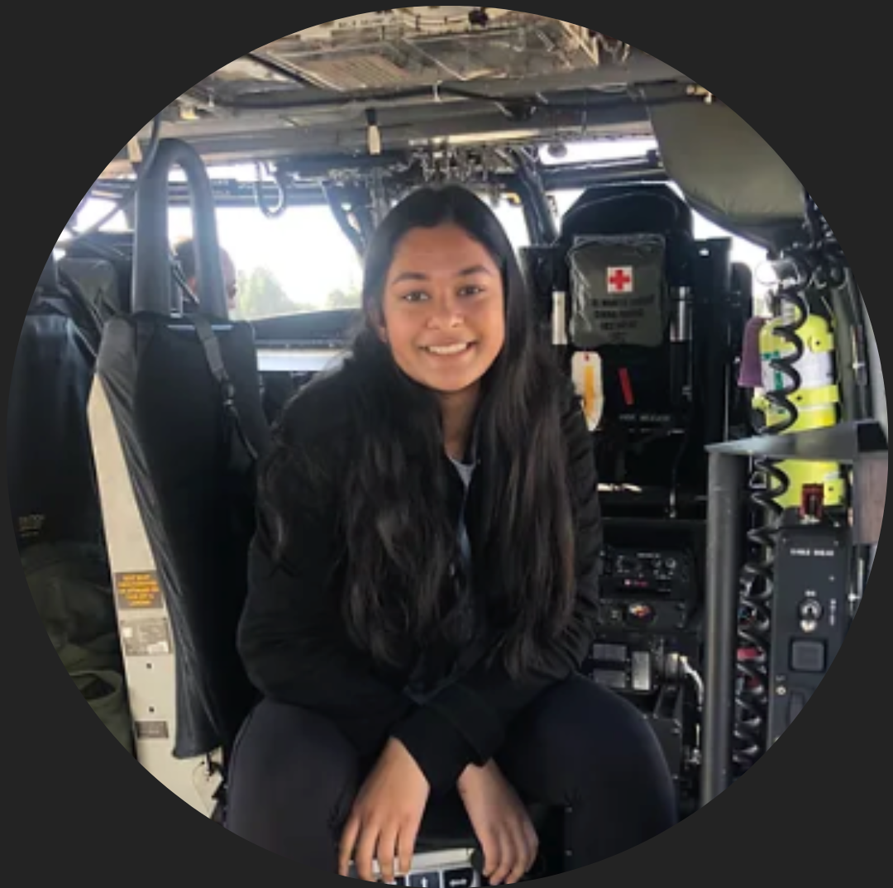
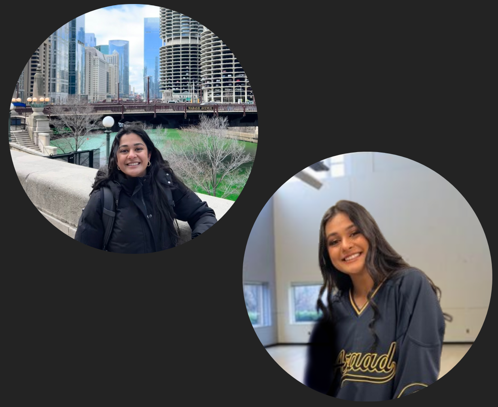

Hey! My name is Ria Jain,
and I am currently a rising second-year studying Electrical Engineering and Computer Science at UC Berkeley. I first began my journey in programming approximately three years ago, when I began learning how to code by independently playing around with simple programs online. Many, many lines of code later, I have developed a passion for critical problem-solving, elegant logic, and creativity that accompanies computer science. Thus far, I have had exciting opportunities to use computer science in applications like environmental sustainability, biology, medical diagonisis, disease outbreak prediction, and much more. I am endlessly fascinated by how recent advances in computer science are driving innovation and revolutionizing the world around us.
Outside academics,
I enjoy dancing, listening to and playing music, coffee, traveling, and
spending time with friends and family!
